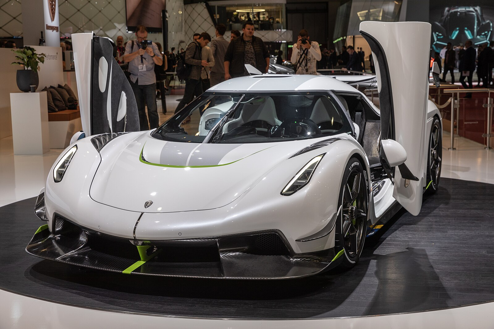

Köenigsegg, a brief history
Köenigsegg Jesko
What is the Köenigsegg jesko?
The Köenigsegg Jesko is a hypercar produced by the swedish company Köenigsegg, it has a limited production run of 125 units.
it is made up of two different variants, the Köenigsegg Jesko attack and the Köenigsegg Jesko absolut.
alongside the Jesko there is a third Köenigsegg sharing the same chassis and design, it is the Köenigsegg Sadairs spear.
it was made for track based performance and lap times and has a production run of 30 units.
Jesko absolut
The Köenigsegg Jesko Absolut is the top speed trim of the Köenigsegg Jesko, with a more aerodynamic body
and 2 fins to stabilise the car at high speeds it allows the car to put down the 1600hp from the engine,
due to this the Köenigsegg Jesko Absolut has a theoretical top speed of 531kmph. However this is unable to be
verified as there are not tires on earth capable of reaching these speeds as of current.
Jesko attack
The Köenigsegg Jesko Attack is the slower trim of the Köenigsegg Jesko, it has more focus on downforce with
a large wing that replaces the two fins from the Jesko Absolut. the large wing allows the car to corner better
in return for sacraficing top speed, however the car is still capable of reaching 483kmph.
Sadairs Spear
The Köenigsegg Jesko Sadairs Spear is the track focussed version of the Jesko, the Sadairs spear has a higher
horsepower output of 1,625 HP. It has an aggressive aero kit on it and is ligher by 35kg, this allows for the car
to take corners at much higher speeds and complete laps faster.
White Köenigsegg Jesko attack

Grey Köenigsegg Jesko Absolut
_02.jpg)